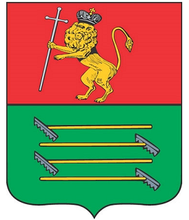

Район образован 10 апреля 1929 года в составе Александровского округа Ивановской Промышленной области из части территории Александровского уезда Владимирской губернии. 20 октября 1930 года Боровковский с/с Киржачского района был передан в Ногинский район Московской области. С 11 марта 1936 года в составе Ивановской области.
С 14 августа 1944 года Киржачский район стал существовать в составе Владимирской области. В 1945 году в состав вновь образованного Покровского района переданы Желудьевский, Ирошниковский, Овчинниковский, Барсковский, Лачужский сельсоветы.
На 1 января 1983 года в состав района входил город Киржач, посёлок городского типа Красный Октябрь и 10 сельских советов: Афанасовский, Горкинский, Зареченский, Илькинский, Кипревский, Новоселовский, Песьяновский, Федоровский, Филипповский, Хмелевский. В 1984 году образован Першинский с/с с включением в его состав части населённых пунктов Федоровского с/с.В 1998 году в результате реформы все сельские советы преобразованы в сельские округа.

Герб Киржачского района
Нынешний герб Киржачского района был утвержден в 2008 году и на нем изображено следующее: «В зеленом поле под красной главой выходящий из оконечности золотой пень с сидящей на нем с распростертыми крыльями и хвостом вправо серебряной совой».
Герб Киржачского района создан с учетом исторического герба города Киржач Владимирского наместничества, Высочайше утвержденного 16 августа 1781 года. Подлинное описание исторического герба гласит:
«Въ верхней части гербъ Владимiрскiй. Въ нижней – въ зеленомъ поле, сидящая на пне, съ распростертыми крыльями, птица сова, каковыхъ въ окрестности сего города находится весьма довольно».
Использование в районном гербе композиции перекликающейся с гербом города Киржач и имеющей в своей основе исторический герб XVIII столетия подчеркивает историческую и территориальную общность двух муниципальных образований и символизирует бережное отношение местных жителей к своей истории и традициям.
В гербе района почетная фигура – глава красного цвета аллегорически символизирует лучшие качества местных жителей, преемственность поколений, единство прошлого, настоящего и будущего.
Сова – традиционный символ мудрости, бдительности. Золото – символ урожая, богатства, стабильности, солнечного тепла, уважения. Зеленый цвет – символ природы, здоровья, молодости, жизненного роста. Черный цвет – символ скромности, разума, вечности бытия.